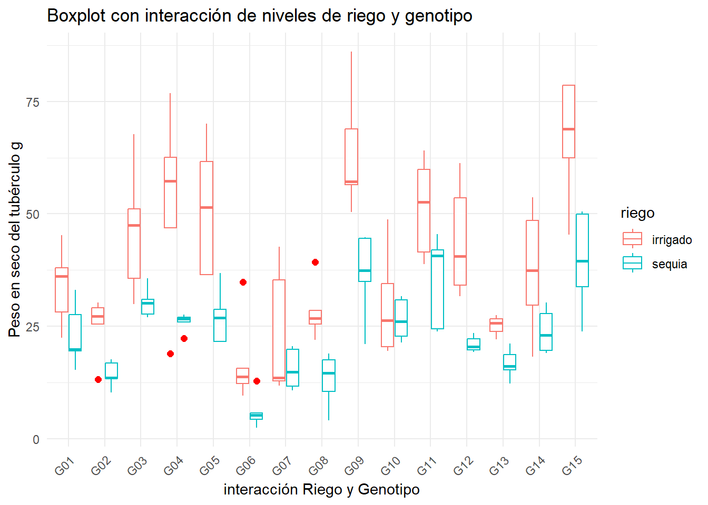
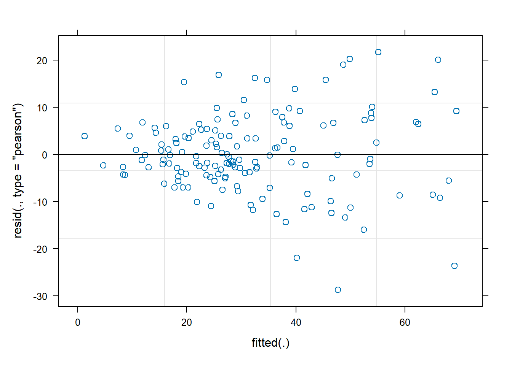
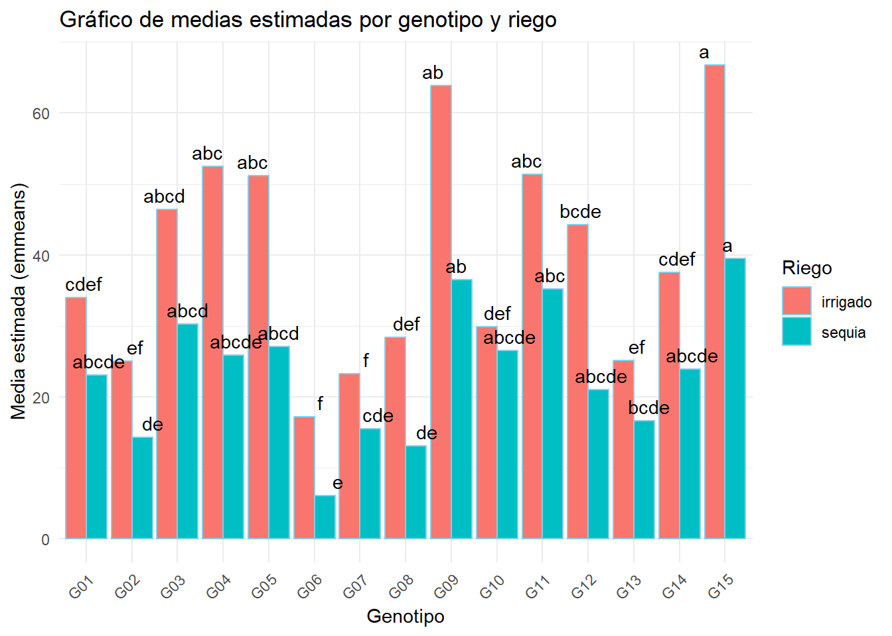
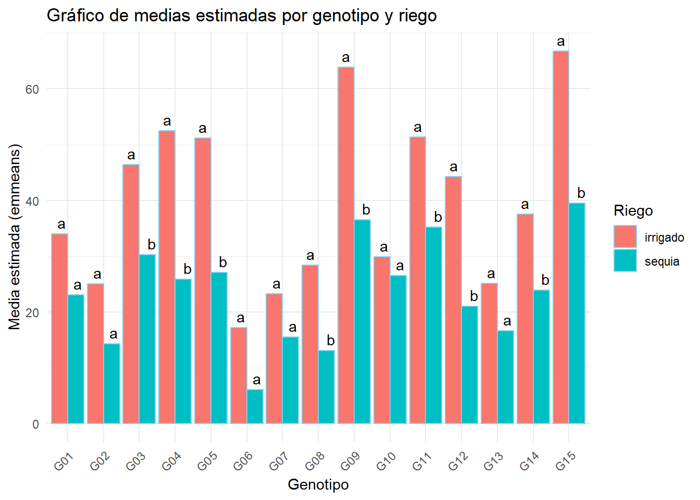
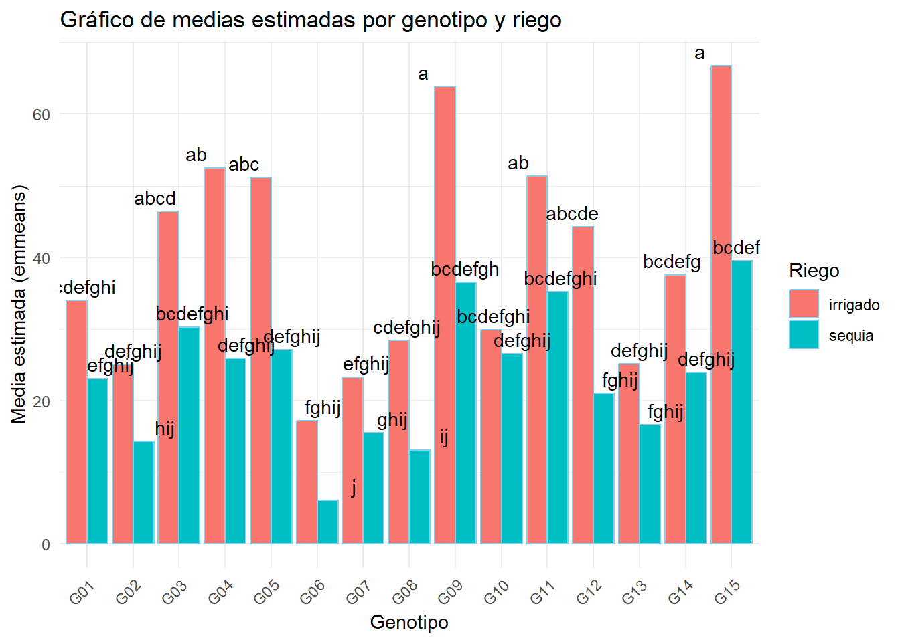

Este gráfico muestra que los residuos están distribuidos de manera aleatoria alrededor de 0, lo cual es bueno; sin embargo, algunos valores atípicos (puntos 22, 69 y 54) se destacan y podrían influir en el modelo. Además, la línea de tendencia ligeramente inclinada sugiere una pequeña desviación en la homogeneidad de la varianza.
Gráfico 2: Q-Q Plot de los Residuos
Los residuos estandarizados siguen bien la línea de normalidad, indicando que se aproximan a una distribución normal; sin embargo, hay una ligera desviación en las colas, especialmente en los puntos atípicos (69, 22 y 54), lo que sugiere que estos valores pueden estar afectando la normalidad de los residuos.
Gráfico 3: Scale-Location
Este gráfico examina la homogeneidad de la varianza al mostrar los residuos estandarizados en función de los valores ajustados. La línea de tendencia ligeramente ascendente indica que los residuos se dispersan más a medida que aumentan los valores ajustados, lo que sugiere una posible heterocedasticidad (varianza no constante). Además, se observan algunos puntos atípicos (22, 69 y 54) que podrían estar influyendo en esta variación y podrían requerir un análisis adicional.
Gráfico 4: Residuals vs Factor Levels (Constant Leverage)
En este gráfico, los residuos estandarizados se distribuyen de forma relativamente equilibrada en los diferentes niveles del factor “bloque”, lo cual es positivo y sugiere que no hay una influencia significativa de estos niveles en los residuos. Sin embargo, algunos puntos atípicos (69, 22 y 54) sobresalen en ciertos bloques, lo que indica que es recomendable revisar estos valores para verificar si afectan la estabilidad de los resultados del modelo.
Boxplot
ggplot(fb, aes(x = geno , y = tubdw, colour = riego)) +geom_boxplot(outlier.colour ="red",outlier.shape =16, outlier.size =2) +labs(title ="Boxplot con interacción de niveles de riego y genotipo", x ="interacción Riego y Genotipo", y ="Peso en seco del tubérculo g") +theme_minimal() +theme(axis.text.x =element_text(angle =45, hjust =1))

Este boxplot muestra la interacción entre los niveles de riego (“irrigado” y “sequía”) y los genotipos en cuanto al peso seco del tubérculo. Cada genotipo (G01 a G15) presenta dos cajas, una para cada nivel de riego. Se observa una variación considerable en el peso seco del tubérculo según el genotipo y el tipo de riego, con algunos genotipos (por ejemplo, G04 y G13) mostrando una gran diferencia en los pesos entre condiciones de riego, lo que sugiere que responden de manera significativa a la disponibilidad de agua. Además, se identifican algunos valores atípicos (en rojo), que podrían indicar variabilidad en la respuesta de ciertos genotipos o errores en la recolección de datos.
Modelo lineal mixto
library(lme4)model <-lmer(formula = tubdw ~ riego + geno + riego*geno + (1| bloque), data = fb)anova(model)## Analysis of Variance Table## npar Sum Sq Mean Sq F value## riego 1 9754.4 9754.4 110.5009## geno 14 20528.6 1466.3 16.6111## riego:geno 14 2139.7 152.8 1.7313plot(model)

Este gráfico muestra la dispersión de los residuos estandarizados en función de los valores ajustados. Los residuos parecen estar distribuidos alrededor de la línea cero sin patrones claros, lo que sugiere una varianza constante y la adecuación del modelo. Sin embargo, hay algunos puntos extremos que podrían considerarse outliers y podrían afectar la precisión del modelo.
Este gráfico muestra la variabilidad del peso seco del tubérculo (tubdw) según la interacción entre los niveles de riego (irrigado) y los genotipos. Las cajas representan la distribución de los datos para cada combinación, y se observa una diferencia notable en la respuesta entre los genotipos y las condiciones de riego. Algunos genotipos responden mejor al riego, lo que indica que la interacción entre ambos factores tiene un efecto en el rendimiento del peso seco.
Remover los outliers
mod <-remove_outliers(data = fb, formula = tubdw ~ riego + geno + riego*geno + (1| bloque), plot_diag = T)mod## $data## $data$raw## # A tibble: 150 × 5## index riego geno bloque tubdw## <chr> <chr> <chr> <chr> <dbl>## 1 1 sequia G01 II 19.8 ## 2 2 sequia G02 IV 17.7 ## 3 3 irrigado G01 III 38.0 ## 4 4 sequia G02 I 13.5 ## 5 5 irrigado G03 II 51.2 ## 6 6 irrigado G04 V 62.5 ## 7 7 irrigado G01 I 22.4 ## 8 8 irrigado G05 IV 51.4 ## 9 9 sequia G06 II 2.37## 10 10 sequia G05 I 28.7 ## # ℹ 140 more rows## ## $data$clean## index riego geno bloque tubdw## 1 1 sequia G01 II 19.80## 2 2 sequia G02 IV 17.67## 3 3 irrigado G01 III 38.02## 4 4 sequia G02 I 13.51## 5 5 irrigado G03 II 51.15## 6 6 irrigado G04 V 62.54## 7 7 irrigado G01 I 22.45## 8 8 irrigado G05 IV 51.44## 9 9 sequia G06 II 2.37## 10 10 sequia G05 I 28.74## 11 11 irrigado G01 II 36.06## 12 12 sequia G07 II 19.79## 13 13 irrigado G08 II 21.96## 14 14 irrigado G06 III 15.66## 15 15 irrigado G09 III 57.22## 16 16 irrigado G10 II 26.29## 17 17 sequia G11 I 41.95## 18 18 sequia G12 III 19.21## 19 19 irrigado G07 I 12.79## 20 20 irrigado G04 II 46.89## 21 21 irrigado G13 II 22.03## 22 22 irrigado G14 III 18.21## 23 23 irrigado G04 IV 57.32## 24 24 sequia G04 V 22.34## 25 25 sequia G08 V 18.90## 26 26 sequia G04 III 26.94## 27 27 sequia G01 IV 27.56## 28 28 irrigado G10 I 19.44## 29 29 irrigado G08 V 28.52## 30 30 irrigado G02 V 30.23## 31 31 irrigado G07 III 42.67## 32 32 irrigado G08 I 25.48## 33 33 irrigado G14 V 48.56## 34 34 irrigado G03 I 29.93## 35 35 sequia G13 III 12.25## 36 36 sequia G01 V 19.44## 37 37 sequia G03 I 27.00## 38 38 irrigado G15 III 78.62## 39 39 irrigado G03 IV 67.71## 40 40 irrigado G09 IV 86.16## 41 41 irrigado G11 II 38.76## 42 42 sequia G03 V 27.72## 43 43 sequia G11 III 40.64## 44 44 irrigado G06 V 13.72## 45 45 sequia G05 V 36.86## 46 46 sequia G08 IV 17.49## 47 47 irrigado G11 IV 52.67## 48 48 sequia G11 II 24.40## 49 49 irrigado G10 III 48.73## 50 50 sequia G06 IV 5.68## 51 51 sequia G09 I 21.00## 52 52 irrigado G11 I 41.47## 53 53 sequia G11 IV 45.43## 54 54 irrigado G15 IV 45.41## 55 55 irrigado G13 IV 27.44## 56 56 sequia G14 V 30.27## 57 57 irrigado G02 IV 25.48## 58 58 irrigado G09 II 68.89## 59 59 irrigado G02 III 27.18## 60 60 sequia G08 III 14.55## 61 61 irrigado G06 II 9.58## 62 62 sequia G13 IV 15.25## 63 63 sequia G14 III 19.05## 64 64 sequia G04 II 27.52## 65 65 irrigado G11 III 64.12## 66 66 irrigado G07 II 11.81## 67 67 irrigado G08 IV 26.72## 68 68 sequia G05 IV 21.54## 69 69 irrigado G04 I NA## 70 70 irrigado G11 V 59.92## 71 71 irrigado G12 I 40.62## 72 72 sequia G14 IV 22.97## 73 73 sequia G07 III 20.52## 74 74 irrigado G03 III 35.59## 75 75 sequia G01 I 15.33## 76 76 sequia G04 I 25.92## 77 77 sequia G03 II 35.63## 78 78 irrigado G15 II 78.64## 79 79 sequia G12 IV 20.44## 80 80 sequia G12 I 22.21## 81 81 sequia G08 I 4.05## 82 82 sequia G05 II 21.59## 83 83 sequia G02 II 10.20## 84 84 sequia G10 I 21.36## 85 85 sequia G15 I 50.53## 86 86 irrigado G07 V 13.48## 87 87 sequia G10 V 31.69## 88 88 sequia G13 II 16.10## 89 89 sequia G07 V 14.79## 90 90 sequia G03 III 30.19## 91 91 sequia G15 IV 39.54## 92 92 sequia G13 I 18.67## 93 93 sequia G03 IV 30.92## 94 94 irrigado G10 V 34.49## 95 95 sequia G13 V 21.13## 96 96 sequia G09 II 34.89## 97 97 irrigado G14 IV 53.68## 98 98 irrigado G01 V 28.16## 99 99 sequia G01 III 33.12## 100 100 irrigado G06 IV 34.79## 101 101 sequia G04 IV 26.66## 102 102 irrigado G15 V 62.46## 103 103 irrigado G13 III 25.72## 104 104 irrigado G02 II 29.09## 105 105 sequia G08 II 10.52## 106 106 irrigado G04 III 76.86## 107 107 sequia G02 V 13.42## 108 108 sequia G06 V 12.78## 109 109 irrigado G15 I 68.86## 110 110 irrigado G13 V 26.68## 111 111 irrigado G05 V 36.46## 112 112 sequia G09 III 37.41## 113 113 sequia G09 V 44.54## 114 114 sequia G10 II 22.76## 115 115 irrigado G07 IV 35.35## 116 116 irrigado G05 I 36.44## 117 117 irrigado G02 I 13.17## 118 118 sequia G05 III 26.82## 119 119 irrigado G12 II 31.66## 120 120 sequia G15 III 33.75## 121 121 irrigado G13 I 23.81## 122 122 sequia G14 II 27.86## 123 123 sequia G12 II 23.44## 124 124 sequia G15 II 23.78## 125 125 irrigado G09 V 56.52## 126 126 sequia G06 I 5.17## 127 127 sequia G09 IV 44.83## 128 128 sequia G15 V 49.95## 129 129 irrigado G14 I 29.72## 130 130 sequia G06 III 4.32## 131 131 irrigado G01 IV 45.29## 132 132 irrigado G12 III 53.58## 133 133 sequia G12 V 19.75## 134 134 irrigado G12 V 61.34## 135 135 sequia G11 V 23.80## 136 136 irrigado G12 IV 34.09## 137 137 irrigado G09 I 50.34## 138 138 sequia G02 III 16.80## 139 139 sequia G07 I 11.63## 140 140 irrigado G08 III 39.26## 141 141 irrigado G06 I 12.21## 142 142 irrigado G10 IV 20.38## 143 143 irrigado G03 V 47.52## 144 144 sequia G07 IV 10.75## 145 145 irrigado G05 III 61.60## 146 146 sequia G14 I 19.63## 147 147 sequia G10 III 30.86## 148 148 irrigado G14 II 37.46## 149 149 irrigado G05 II 70.07## 150 150 sequia G10 IV 26.09## ## ## $outliers## index riego geno bloque tubdw resi res_MAD rawp.BHStud## 69 69 irrigado G04 I 18.95 -28.76959 -4.125053 0.00003706494## adjp bholm out_flag## 69 0.00003706494 0.005559741 OUTLIER## ## $diagplot
La limpieza de los datos mejoró la normalidad y homocedasticidad de los residuos en tu modelo. Antes de remover los outliers, los residuos mostraban valores extremos y una ligera tendencia a variar en amplitud (heterocedasticidad). Después de la limpieza, la distribución de los residuos se vuelve más simétrica y cercana a una normal en el histograma y el Q-Q plot, y la variabilidad de los residuos se mantiene más constante en el gráfico de homocedasticidad, lo que indica que el modelo ahora cumple mejor con los supuestos de normalidad y homocedasticidad necesarios para realizar inferencias confiables.
Este gráfico de Tukey muestra las diferencias significativas entre los grupos (genotipos y condiciones de riego/sequía) en términos de la media del peso seco del tubérculo. Las letras indican si hay diferencias significativas: grupos que comparten al menos una letra no son significativamente diferentes, mientras que los que tienen letras distintas sí lo son. Las barras verticales representan los intervalos de confianza; si estos no se solapan entre grupos, la diferencia es más evidente. En conjunto, el gráfico facilita la comparación de medias entre tratamientos, indicando cuáles son estadísticamente similares o distintos.
grupos <- tukey_result$groups %>%rownames_to_column("tratamientos") %>%separate(tratamientos, into=c("geno","riego"), sep =":")str(grupos)## 'data.frame': 30 obs. of 4 variables:## $ geno : chr "G15" "G09" "G04" "G11" ...## $ riego : chr "irrigado" "irrigado" "irrigado" "irrigado" ...## $ tubdw : num 66.8 63.8 52.5 51.4 51.2 ...## $ groups: chr "a" "a" "ab" "ab" ...ggplot(grupos, aes(x = geno, y = tubdw, fill = riego)) +geom_bar(stat ="identity", position ="dodge", color ="skyblue") +geom_text(aes(label = groups), position =position_dodge(width =0.9), vjust =-0.5) +# Aquí se añaden las etiquetas de 'groups' encima de las barraslabs(x ="Genotipo", y ="TUBDW", fill=("Riego")) +theme_minimal() +theme(axis.text.x =element_text(angle =45, hjust =1)) +ggtitle("Gráfico de barras: TUBDW por genotipo y riego")
Este gráfico compara el peso seco del tubérculo (TUBDW) entre distintos genotipos bajo condiciones de irrigado y sequía. Las letras indican diferencias significativas: barras con letras compartidas no presentan diferencias estadísticas, mientras que aquellas con letras distintas sí. En general, algunos genotipos tienen un mayor TUBDW bajo sequía (como G09 y G15), mostrando que la respuesta al riego varía según el genotipo. Este análisis permite identificar qué combinaciones de genotipo y condición de riego afectan significativamente el peso seco del tubérculo.
emeans comparación de medias
library(emmeans)library(multcomp)models <-lmer(formula = tubdw ~ (1| bloque) + riego*geno, data = fb)anova(models)## Analysis of Variance Table## npar Sum Sq Mean Sq F value## riego 1 9754.4 9754.4 110.5009## geno 14 20528.6 1466.3 16.6111## riego:geno 14 2139.7 152.8 1.7313cm1 <-emmeans(models, ~ geno | riego) %>%cld(Letters = letters, reversed = T)cm1## riego = irrigado:## geno emmean SE df lower.CL upper.CL .group ## G15 66.80 4.48 84.9 57.90 75.7 a ## G09 63.83 4.48 84.9 54.92 72.7 ab ## G04 52.51 4.48 84.9 43.61 61.4 abc ## G11 51.39 4.48 84.9 42.49 60.3 abc ## G05 51.20 4.48 84.9 42.30 60.1 abc ## G03 46.38 4.48 84.9 37.48 55.3 abcd ## G12 44.26 4.48 84.9 35.36 53.2 bcde ## G14 37.53 4.48 84.9 28.62 46.4 cdef## G01 34.00 4.48 84.9 25.09 42.9 cdef## G10 29.87 4.48 84.9 20.96 38.8 def## G08 28.39 4.48 84.9 19.49 37.3 def## G13 25.14 4.48 84.9 16.23 34.0 ef## G02 25.03 4.48 84.9 16.13 33.9 ef## G07 23.22 4.48 84.9 14.32 32.1 f## G06 17.19 4.48 84.9 8.29 26.1 f## ## riego = sequia:## geno emmean SE df lower.CL upper.CL .group ## G15 39.51 4.48 84.9 30.61 48.4 a ## G09 36.53 4.48 84.9 27.63 45.4 ab ## G11 35.24 4.48 84.9 26.34 44.1 abc ## G03 30.29 4.48 84.9 21.39 39.2 abcd ## G05 27.11 4.48 84.9 18.21 36.0 abcd ## G10 26.55 4.48 84.9 17.65 35.5 abcde ## G04 25.88 4.48 84.9 16.97 34.8 abcde ## G14 23.96 4.48 84.9 15.05 32.9 abcde ## G01 23.05 4.48 84.9 14.15 32.0 abcde ## G12 21.01 4.48 84.9 12.11 29.9 abcde ## G13 16.68 4.48 84.9 7.78 25.6 bcde ## G07 15.50 4.48 84.9 6.59 24.4 cde ## G02 14.32 4.48 84.9 5.42 23.2 de ## G08 13.10 4.48 84.9 4.20 22.0 de ## G06 6.06 4.48 84.9 -2.84 15.0 e ## ## Degrees-of-freedom method: kenward-roger ## Confidence level used: 0.95 ## P value adjustment: tukey method for comparing a family of 15 estimates ## significance level used: alpha = 0.05 ## NOTE: If two or more means share the same grouping symbol,## then we cannot show them to be different.## But we also did not show them to be the same.cm2 <-emmeans(models, ~ riego | geno) %>%cld(Letters = letters, reversed = T)cm2## geno = G01:## riego emmean SE df lower.CL upper.CL .group## irrigado 34.00 4.48 84.9 25.09 42.9 a ## sequia 23.05 4.48 84.9 14.15 32.0 a ## ## geno = G02:## riego emmean SE df lower.CL upper.CL .group## irrigado 25.03 4.48 84.9 16.13 33.9 a ## sequia 14.32 4.48 84.9 5.42 23.2 a ## ## geno = G03:## riego emmean SE df lower.CL upper.CL .group## irrigado 46.38 4.48 84.9 37.48 55.3 a ## sequia 30.29 4.48 84.9 21.39 39.2 b ## ## geno = G04:## riego emmean SE df lower.CL upper.CL .group## irrigado 52.51 4.48 84.9 43.61 61.4 a ## sequia 25.88 4.48 84.9 16.97 34.8 b ## ## geno = G05:## riego emmean SE df lower.CL upper.CL .group## irrigado 51.20 4.48 84.9 42.30 60.1 a ## sequia 27.11 4.48 84.9 18.21 36.0 b ## ## geno = G06:## riego emmean SE df lower.CL upper.CL .group## irrigado 17.19 4.48 84.9 8.29 26.1 a ## sequia 6.06 4.48 84.9 -2.84 15.0 a ## ## geno = G07:## riego emmean SE df lower.CL upper.CL .group## irrigado 23.22 4.48 84.9 14.32 32.1 a ## sequia 15.50 4.48 84.9 6.59 24.4 a ## ## geno = G08:## riego emmean SE df lower.CL upper.CL .group## irrigado 28.39 4.48 84.9 19.49 37.3 a ## sequia 13.10 4.48 84.9 4.20 22.0 b ## ## geno = G09:## riego emmean SE df lower.CL upper.CL .group## irrigado 63.83 4.48 84.9 54.92 72.7 a ## sequia 36.53 4.48 84.9 27.63 45.4 b ## ## geno = G10:## riego emmean SE df lower.CL upper.CL .group## irrigado 29.87 4.48 84.9 20.96 38.8 a ## sequia 26.55 4.48 84.9 17.65 35.5 a ## ## geno = G11:## riego emmean SE df lower.CL upper.CL .group## irrigado 51.39 4.48 84.9 42.49 60.3 a ## sequia 35.24 4.48 84.9 26.34 44.1 b ## ## geno = G12:## riego emmean SE df lower.CL upper.CL .group## irrigado 44.26 4.48 84.9 35.36 53.2 a ## sequia 21.01 4.48 84.9 12.11 29.9 b ## ## geno = G13:## riego emmean SE df lower.CL upper.CL .group## irrigado 25.14 4.48 84.9 16.23 34.0 a ## sequia 16.68 4.48 84.9 7.78 25.6 a ## ## geno = G14:## riego emmean SE df lower.CL upper.CL .group## irrigado 37.53 4.48 84.9 28.62 46.4 a ## sequia 23.96 4.48 84.9 15.05 32.9 b ## ## geno = G15:## riego emmean SE df lower.CL upper.CL .group## irrigado 66.80 4.48 84.9 57.90 75.7 a ## sequia 39.51 4.48 84.9 30.61 48.4 b ## ## Degrees-of-freedom method: kenward-roger ## Confidence level used: 0.95 ## significance level used: alpha = 0.05 ## NOTE: If two or more means share the same grouping symbol,## then we cannot show them to be different.## But we also did not show them to be the same.cm3 <-emmeans(models, ~ riego * geno) %>%cld(Letters = letters, reversed = T)cm3## riego geno emmean SE df lower.CL upper.CL .group ## irrigado G15 66.80 4.48 84.9 57.90 75.7 a ## irrigado G09 63.83 4.48 84.9 54.92 72.7 a ## irrigado G04 52.51 4.48 84.9 43.61 61.4 ab ## irrigado G11 51.39 4.48 84.9 42.49 60.3 ab ## irrigado G05 51.20 4.48 84.9 42.30 60.1 abc ## irrigado G03 46.38 4.48 84.9 37.48 55.3 abcd ## irrigado G12 44.26 4.48 84.9 35.36 53.2 abcde ## sequia G15 39.51 4.48 84.9 30.61 48.4 bcdef ## irrigado G14 37.53 4.48 84.9 28.62 46.4 bcdefg ## sequia G09 36.53 4.48 84.9 27.63 45.4 bcdefgh ## sequia G11 35.24 4.48 84.9 26.34 44.1 bcdefghi ## irrigado G01 34.00 4.48 84.9 25.09 42.9 bcdefghi ## sequia G03 30.29 4.48 84.9 21.39 39.2 bcdefghi ## irrigado G10 29.87 4.48 84.9 20.96 38.8 bcdefghi ## irrigado G08 28.39 4.48 84.9 19.49 37.3 cdefghij## sequia G05 27.11 4.48 84.9 18.21 36.0 defghij## sequia G10 26.55 4.48 84.9 17.65 35.5 defghij## sequia G04 25.88 4.48 84.9 16.97 34.8 defghij## irrigado G13 25.14 4.48 84.9 16.23 34.0 defghij## irrigado G02 25.03 4.48 84.9 16.13 33.9 defghij## sequia G14 23.96 4.48 84.9 15.05 32.9 defghij## irrigado G07 23.22 4.48 84.9 14.32 32.1 efghij## sequia G01 23.05 4.48 84.9 14.15 32.0 efghij## sequia G12 21.01 4.48 84.9 12.11 29.9 fghij## irrigado G06 17.19 4.48 84.9 8.29 26.1 fghij## sequia G13 16.68 4.48 84.9 7.78 25.6 fghij## sequia G07 15.50 4.48 84.9 6.59 24.4 ghij## sequia G02 14.32 4.48 84.9 5.42 23.2 hij## sequia G08 13.10 4.48 84.9 4.20 22.0 ij## sequia G06 6.06 4.48 84.9 -2.84 15.0 j## ## Degrees-of-freedom method: kenward-roger ## Confidence level used: 0.95 ## P value adjustment: tukey method for comparing a family of 30 estimates ## significance level used: alpha = 0.05 ## NOTE: If two or more means share the same grouping symbol,## then we cannot show them to be different.## But we also did not show them to be the same.
Gráfico geno | riego
cm1_df <-as.data.frame(cm1) %>%rename(sig =".group")ggplot(cm1_df, aes(x = geno, y = emmean, fill = riego)) +geom_bar(stat ="identity", position ="dodge", color ="skyblue") +geom_text(aes(label = sig, y = emmean), position =position_dodge(width =0.9), vjust =-0.5) +labs(x ="Genotipo", y ="Media estimada (emmeans)", fill ="Riego") +theme_minimal() +theme(axis.text.x =element_text(angle =45, hjust =1)) +ggtitle("Gráfico de medias estimadas por genotipo y riego")

Este gráfico muestra cómo el riego (irrigado vs sequía) afecta el peso seco del tubérculo según el genotipo. Las letras indican diferencias estadísticas; los genotipos tienen mayores pesos bajo riego, con variaciones significativas entre ellos.
Gráfico riego | geno
cm2_df <-as.data.frame(cm2) %>%rename(sig =".group")ggplot(cm2_df, aes(x = geno, y = emmean, fill = riego)) +geom_bar(stat ="identity", position ="dodge", color ="skyblue") +geom_text(aes(label = sig, y = emmean), position =position_dodge(width =0.9), vjust =-0.5) +labs(x ="Genotipo", y ="Media estimada (emmeans)", fill ="Riego") +theme_minimal() +theme(axis.text.x =element_text(angle =45, hjust =1)) +ggtitle("Gráfico de medias estimadas por genotipo y riego")

Aquí se comparan los efectos del riego dentro de cada genotipo. El riego mejora significativamente el peso seco en la mayoría de los genotipos, aunque la magnitud del efecto varía entre ellos.
Gráfico geno * riego
cm3_df <-as.data.frame(cm3) %>%rename(sig =".group")ggplot(cm3_df, aes(x = geno, y = emmean, fill = riego)) +geom_bar(stat ="identity", position ="dodge", color ="skyblue") +geom_text(aes(label = sig, y = emmean), position =position_dodge(width =0.9), vjust =-0.5) +labs(x ="Genotipo", y ="Media estimada (emmeans)", fill ="Riego") +theme_minimal() +theme(axis.text.x =element_text(angle =45, hjust =1)) +ggtitle("Gráfico de medias estimadas por genotipo y riego")

Este gráfico muestra que el riego aumenta el peso seco del tubérculo en la mayoría de los genotipos, destacando a G04, G09 y G15 como los que logran las mayores medias con riego. Las letras indican diferencias estadísticas: genotipos con letras distintas tienen medias significativamente diferentes. En general, el gráfico permite identificar qué genotipos responden mejor al riego.